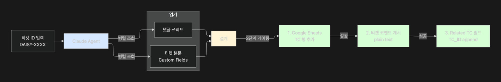
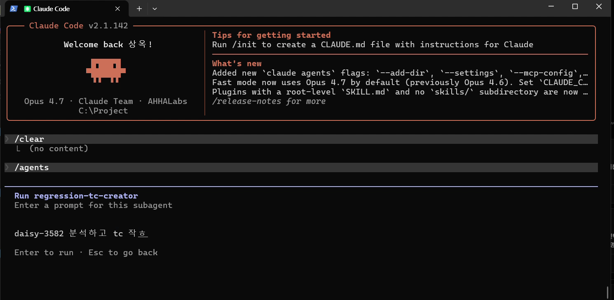
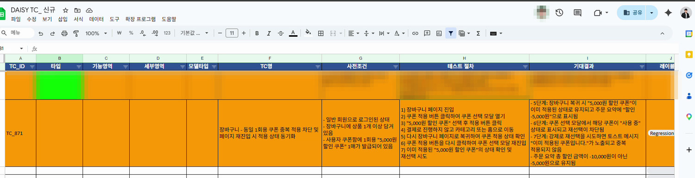
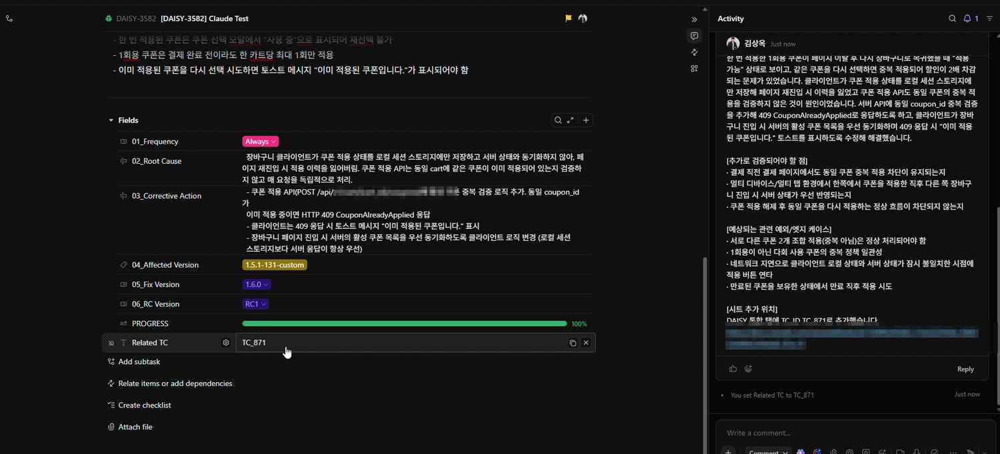
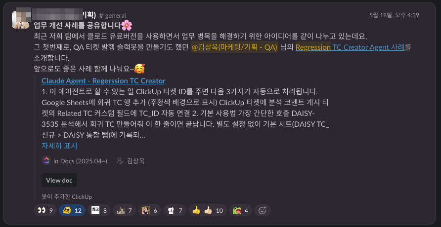

제가 의무화한 Root Cause 기록을 읽어 회귀 TC를 설계하고, Google Sheets에 기록하고, 티켓에 코멘트와 필드까지 연결하는 Claude 기반 Agent입니다. 정책을 만든 사람이 그 정책이 남긴 데이터를 쓰는 도구를 직접 만들었습니다.
RCA 기록은 쌓이는데 활용이 안 되는 자산이 될 위험이 있었고, 회귀 TC 설계·기록·연결은 매 스프린트 반복되는 수작업이었습니다.
MCP 도구 조합 · 3단계 게이팅 · 안전장치를 포함한 시스템으로 구현했습니다.
티켓 ID 한 줄이면 TC 설계·시트 기록·티켓 연결이 자동으로 끝납니다. 타 팀이 사내 업무 개선 사례로 공유했습니다.
QA 워크플로우를 설계하면서 버그 티켓의 Root Cause · Corrective Action을 기록하도록 의무화했습니다. 그런데 이 정보는 기록만 되고 활용이 안 되는 자산이 될 위험이 있었습니다 — 매 스프린트마다 버그 티켓을 일일이 읽고, 회귀 TC를 손으로 설계하고, 시트에 기록하고, 원본 티켓에 연결하는 과정이 단순 반복의 연속이었습니다.


에이전트를 서브에이전트로 등록해 두고, 티켓 ID 하나만 자연어로 넘기면 됩니다. 별도 설정이나 옵션 플래그 없이 기본 시트에 기록되도록 기본값을 잡아, 쓰는 사람이 매번 결정할 것을 없앴습니다.
단순히 티켓을 요약하는 게 아니라, 과거 실패 모드를 재현하는 일을 합니다.
| 축 | 명세 / 예시 |
|---|---|
| Happy-path | 의도대로 동작하는 주요 end-to-end 시나리오 |
| 입력/데이터 변형 | 경계값, 일반값, 의미 있는 조합 |
| 에러/실패 조건 | 잘못된 입력, 누락 데이터, 타임아웃, 권한, 연동 실패 |
| 연동/외부 시스템 | 다른 서비스, 모델 추론, 스토리지, 백엔드 응답 기반 UI 갱신 |
| Frequency/반복 | 빈번 실행, 배치/스케줄, 피크 타임 시 안정성 |
에이전트가 형식적으로 TC를 찍어내는 것을 막기 위해 출력량 규칙을 명확히 정의했습니다.
14컬럼 양식으로 시트 마지막 행 다음에 직접 기록합니다.
Agent가 추가한 행은 주황색 배경으로 칠해 사람이 작성한 TC와 즉시 구분되도록 했고,
wrapStrategy: WRAP을 적용해 셀 안 줄바꿈이 실제로 보이도록 했습니다.

TC 표는 코멘트에 넣지 않고 TC는 시트가 정본이라는 원칙을 지킵니다. 코멘트에는 간단 분석 · 추가 검증 포인트 · 관련 엣지 케이스 · 시트 추가 위치만 들어갑니다. 생성한 TC_ID는 티켓의 Related TC 필드에 기존값 보존한 채 append해 양방향 추적성이 자동으로 남습니다.

드롭다운·조건부 서식이 걸린 빈 영역이 있으면 API가 그 영역까지를 “테이블”로 인식해 마지막 데이터 행에서 10~20행 떨어진 곳에 행을 박아버렸습니다.
→ add_rows를 포기하고,
마지막 데이터 행 + 1부터 시작하는 명시적 셀 범위를 계산해 직접 쓰도록 설계 변경.
마크다운으로 쓰면 **강조**·## 헤더·- 불릿이
모두 글자 그대로 노출되었습니다.
→ 마크다운 전면 금지로 규칙을 바꿔,
제목은 대괄호, 불릿은 가운데점, 강조는 ALL CAPS: 패턴으로
plain text에서도 시각 구조가 남도록 재설계.
시트 마지막 행의 TC_ID를 먼저 읽고, 그 형식을 유지한 채 일련번호만 증가시킵니다. 순수 숫자면 +1, 접두어가 있으면 접두어 유지. Agent가 출처·형식을 마음대로 만들지 않도록 제약하는 것이 핵심이었습니다.
만들어 쓰는 것과 조직이 받아들이는 것은 다른 문제입니다. 이 에이전트는 제가 홍보한 것이 아니라 다른 팀이 사내 개선 사례로 소개하면서 알려졌습니다.
